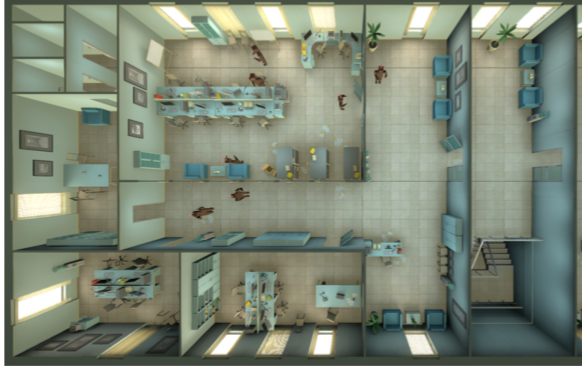

Don’t Catch It: An Interactive Virtual-Reality Environment to Learn About COVID-19 Measures Using Gamification Elements


Venue. MuC (2021) Full Paper
Authors. Christian Krauter, Jonas Vogelsang, Aimee Sousa Calepso, Katrin Angerbauer, Michael Sedlmair
Abstract. The world is still under the influence of the COVID-19 pandemic. Even though vaccines are deployed as rapidly as possible, it is still necessary to use other measures to reduce the spread of the virus. Measures such as social distancing or wearing a mask receive a lot of criticism. Therefore, we want to demonstrate a serious game to help the players understand these measures better and show them why they are still necessary. The player of the game has to avoid other agents to keep their risk of a COVID-19 infection low. The game uses Virtual Reality through a Head-Mounted-Display to deliver an immersive and enjoyable experience. Gamification elements are used to engage the user with the game while they explore various environments. We also implemented visualizations that help the user with social distancing.